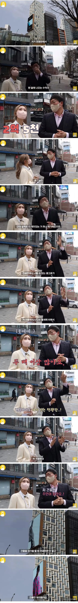

알고보면 놀라운 전광판 수익
댓글
원래 한 명이 다 가지고 있다가 전광판 유지조건으로 건물만 매매하지 않았을까 ㅋㅋ
저 전광판을 건물에 붙이는것도 엄청난 허가를 받아야 하겠지? 아니면 너도 나도 붙일것 같은데
위치 안좋으면 광고 안붙음 ㅋㅋ
허용된 구역이 있을거임
옥외 광고법이 꽤 빡세서 새로 허가 받는거 자체가 힘들다고 들었음
성수동감자탕 건물에 있는 광고판도 2주에 3000만원인가 한다고 들음
전광판 다는건 리스크가 큰 행위임
광고 안들어와서 유지비만 계속 깨지는 경우가 많어
광고판은 방치라도 하지 전광판은 유지비도 무시못함
https://www.dogdrip.net/662036030
이것도 결국 1년반 동안 광고 못받았다는 뜻임
새로 허가받는거 개빡세다고 들음. 서장훈 빌딩이 가치가 높은게 위치도 위치지만 옥상에 옥외광고판이 달려있음.. 양재동 복판에..
광고판만 해도
1. 신규 허가는 잘 안나오는 걸로 알고 있고.
2. 기존 허가난 곳도 수익안나오면 걍 철거함. 강남 요지에 있으면 개꿀임. 하지만 가령 영등포에 있는 (여의도에서 영등포구청쪽으로 건너가는 다리에서 바로 보이는 곳)만 해도. 망한지 오래인 인따르시아 광고가 몇년째 유지중이었음.
걍 철거해버리는 곳도 있었고.
거기가 그정도면 사실상 거의 대부분의 입지에선 쓸모가 없음...
인따르시아ㅋㅋㅋㅋㅋㅋ 진짜 그거 10년은 본 거 같음ㅋㅋㅋㅋ 그 양말은 죽어서도 못 까먹을 듯
ㅅㅂㅋㅋㅋ 인따르시아
ㄷㄷㄷㄷㄷㄷㄷㄷ
광화문 가보면 이게 광화문이야 타임스퀘어야 한다..
보니까 옆에 건물짓고있어서 지어지면 광고 못할듯
호에에
전광판도 건물주에게 월세 내겠네
유지보수비 빼고 수익이 2.5억이면 팔겠다고 하면100억+ 받나
저거 우리가 그냥 슥 보고 지나가는 고속도로 전광판도 월 수입 어마어마함
그네 저 광고판때문에 가려지는 층이 있을텐데 그러면 그만큼 가격을 깍는건가?
건물지을때부터 전광판달꺼라고하고 설계해두면 저쪽에 채광이 필요없는부분 몰아 넣는거지
저 건물 전체 임대료가 2억이 안된다고?
합법임?
건물이 다른 사람것이 됐는데 그 건물에 붙은 전광판을 처리할 수가 없는건가